IGB300 — Weeks 3-4
Week 3-4
Tasks | Hours |
|---|---|
3 Game Concept Pitches | 1h |
Team Availability Sheet (fill in) | 0.5h |
Skillset Word Document (fill in) | 2h |
Idea Voting Sheet (Participation) | 0.5h |
Idea Voting 2 | 5m |
Workbook input | 2h |
Update Unity | 1h |
Week 3 Lecture | 2h |
Week 4 Lecture | 2h |
Week 4 Check -in | 1h |
Total | 12h 05m |
3 Game Concept Pitches - 1h
- A game where every action will cost your remaining time.
The use of special skills like dash and attack will cost the player's future lifespan.
The players must think of the right time to act and the right time to conserve time to arrive at the destination before running out of life.
- A game where players navigate by manipulating the UI themselves.
Players move UI elements such as health bars and minimaps to progress through the game.
It offers a unique experience where the UI itself becomes part of the gameplay.
- A game where you intentionally exploit bugs to progress.
It makes use of behaviors that are typically considered bugs, such as walking through walls or overlapping objects.
It features puzzle elements where the solution depends on the player’s creativity.
Team Availability Sheet - 0.5h
I shared my approximately available time
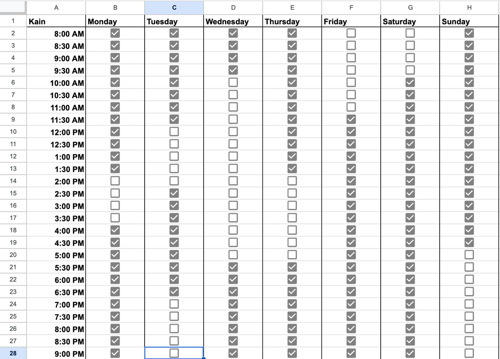
Skillset Word Document - 2h
Wrote what I’ve experienced through the units completed through university.
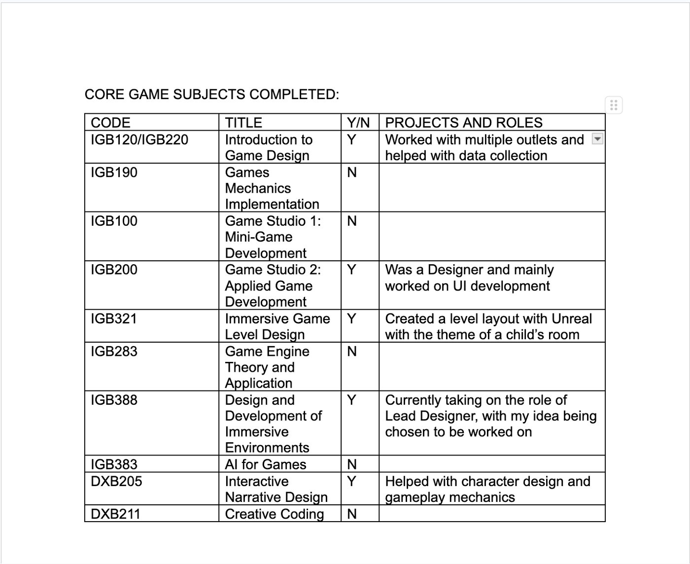
Idea Voting Sheet - 10m
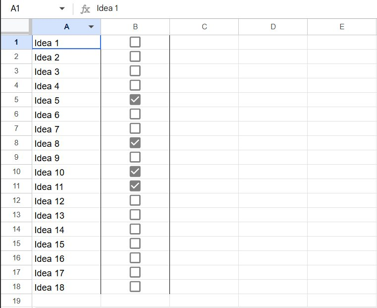
Idea Voting 2 - 10m
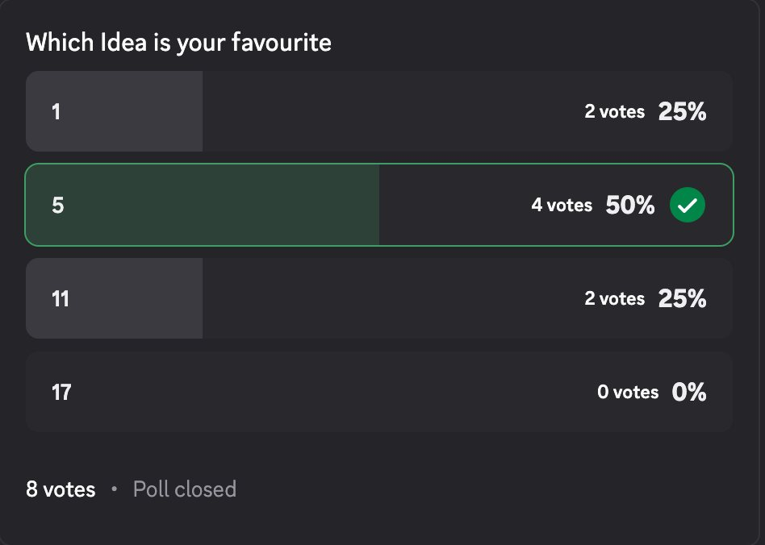
Team Meeting 1 - 1h
N/A, evidence not recorded.
Lecture week 3 - 2h
N/A.
Lecture week 4 - 2h
N/A.
IGB300 — Weeks 5-7
Week 5-7
Tasks | Hours |
|---|---|
Planned GDD part breakdown | 0.5 |
Drafted system & mechanics idea (brainstorm) | 1.5 |
Background Research GDD | 3 |
Play through similar concept games | 2 |
Attended designer meeting 1 | 1 |
Appendix in GDD | 0.5 |
Market Research | 3 |
Search references for market research | 1 |
Creating Mood Board | 1 |
Narrative Hooks | 3 |
Design criteria section | 1 |
Narrative section | 1 |
Attended Foundry workshop 1 | 2 |
Attended Foundry workshop 2 | 1 |
Playing similar concept game | 1 |
Player goals and challenges section in GDD | 1.5 |
Attend week 7 lecture | 2 |
Attend check-in 2 | 2 |
Total | 28 |
Search References for Background
I spent some time searching for academic and industry references that could support our game concept. The main areas I looked into were player engagement in idle games, the psychology behind surprise mechanics, and general market data on casual gaming demographics.
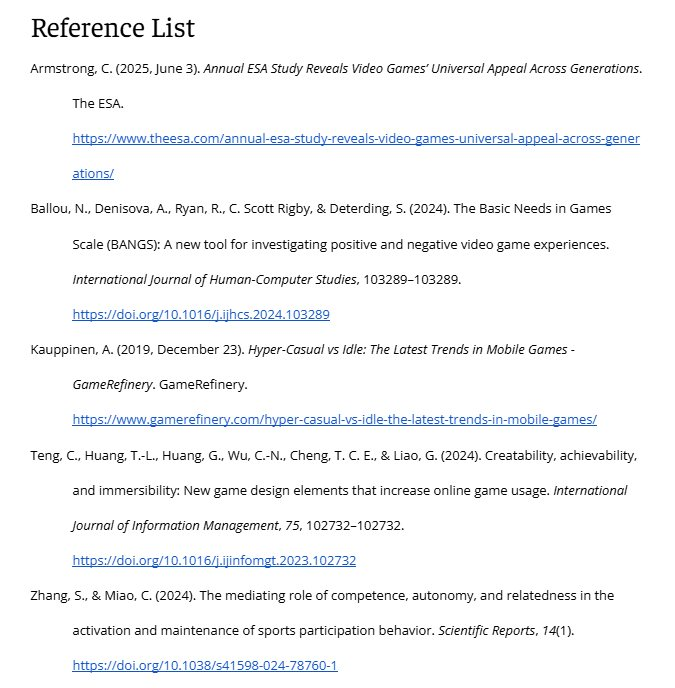
Finalized design criteria section in GDD
For this task, I went through the design criteria section and made sure all the points were clear and well-organized. The criteria cover four main areas: core gameplay, player experience, progression and rewards, and feasibility.
Edit Narrative section in GDD
I edited and expanded the narrative section of the GDD. The game is about a player as a test subject, monitored by a supervisor. The story is delivered through short pop-ups at milestones.
This keep the gameplay simple and not interrupt the idle loop. It also add a dark humour by showing the player is being observed.
Play Through Similar Concept Games
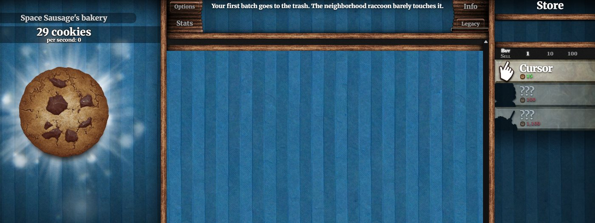
Write Background research section based on references
Using the references I found, I wrote the background research section for the GDD.
I organised the key findings in my working document.
I covered three main topics: the game market, idle game behaviour, and player psychology.
I also connect each research to our game design to show how it support our ideas.
This section take quite long time because I needed to check the APA format.
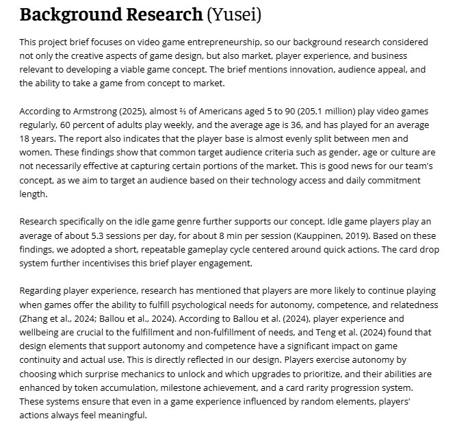
Mood Board
I created a mood board using PureRef for the visual direction of our game. It include references for environment, colours, UI, and effects. I also added examples for card rarity using colour difference. This mood board will help the team, especially Johen, when they start to make the game assets.
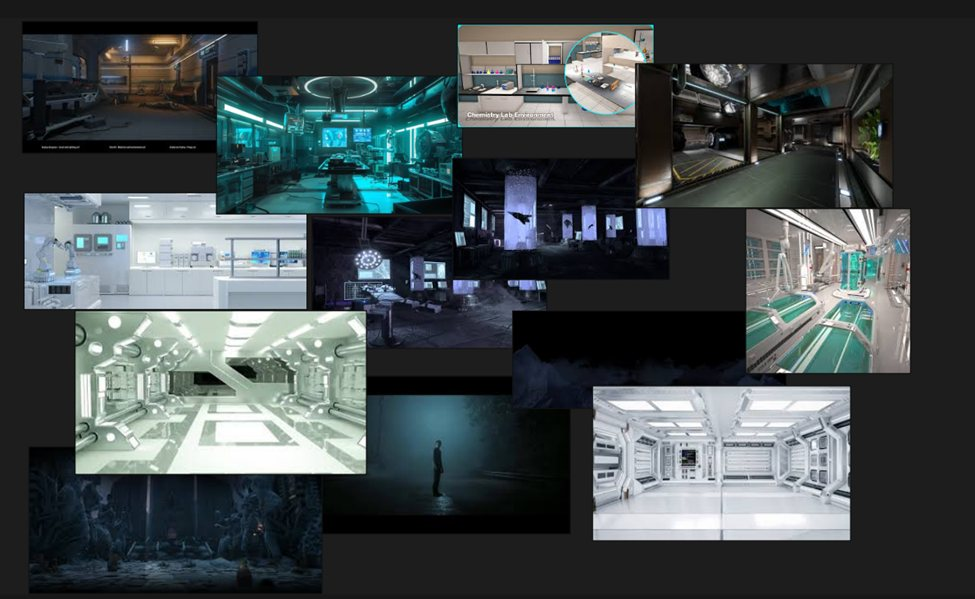
Narrative Hooks spreadsheet
I created a spreadsheet for narrative hooks in the game. It have 24 entries with different type of events, like pop-ups and milestones. Each entry show when it appears, what it say, and the purpose. I also added priority to help the team understand which one is more important.
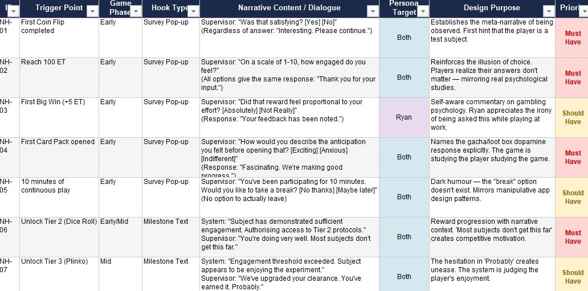
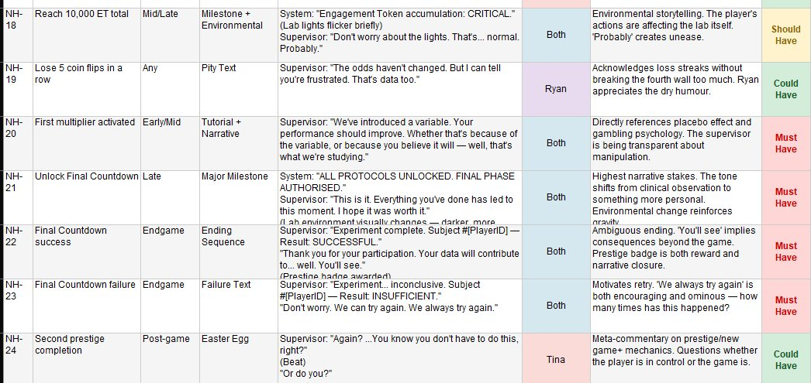
Market Research Report
As suggested by Glen at the Foundry workshop, I conducted market research on our two target personas, Ryan and Tina. I looked at their preferences, behaviours, and how they are similar and different.I also included some design recommendations based on this research.
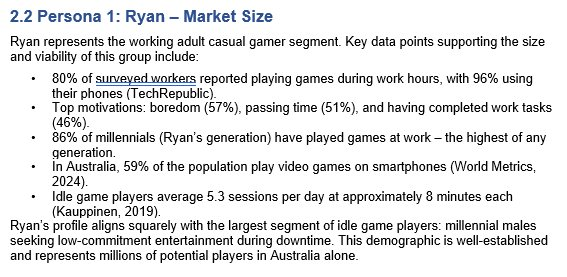
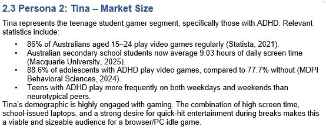
Lecture week 7
17/4
Check in week 7
17/4
I completed the check-in process, but due to my limited English skills, I was not able to communicate clearly, and what I did was not properly conveyed.